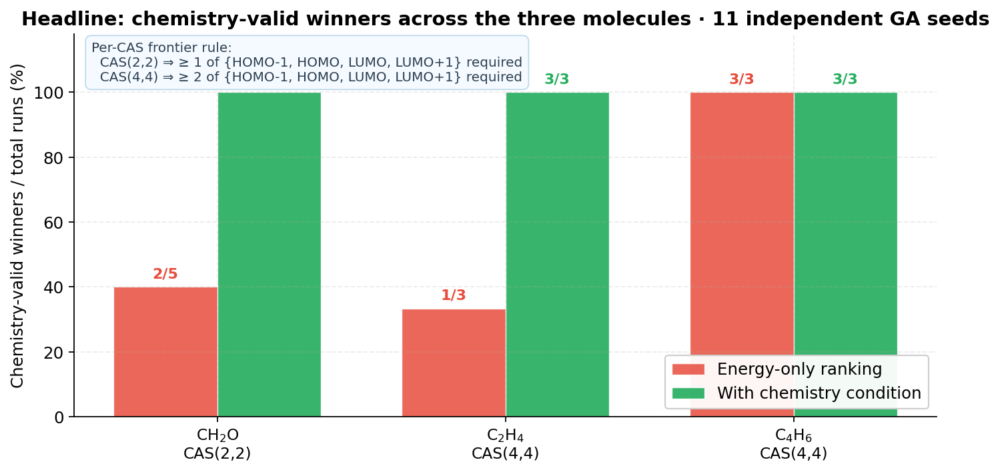
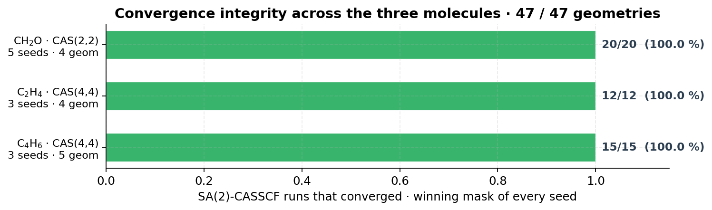

Contents
- Scope & methodological framing
- Executive summary
- The five tests an active space must pass
- Multi-basin reality & the limits of intra-active multistart
- Formaldehyde (CH₂O) — search-sensitivity benchmark
- Ethylene (C₂H₄) — flagship redirection
- 1,3-Butadiene (C₄H₆) — improvement over the NOON-MP2 baseline
- Convergence integrity across the three systems
- Workflow & key lessons
- Protocol & what is reported
- Conclusions
1. Scope & methodological framing
Traditional active-space ranking often overweights a single scalar — the optimized SA-CASSCF energy. On the photochemically interesting systems studied here, that scalar can reward chemically poor orbital sets (deep-σ correlation, far virtuals, masks that omit the frontier orbitals altogether). The contribution of this report is a chemistry-consistent validation framework that filters those failure modes before any energy ranking is performed and redirects the search toward physically meaningful sub-spaces.
The benchmark covers three frontier-driven photochemical systems — formaldehyde, ethylene and 1,3-butadiene — with CAS(2,2) and CAS(4,4), 11 independent GA seeds and 47 SA-CASSCF runs in total. No fitness adjustment, no hand-picked active space, and no partial scan is used; every winner is screened against five independent conditions before being reported.
2. Executive summary
- CH₂O exposes a search-side bottleneck on very small spaces (CAS(2,2) over 30+ MOs); the chemically correct n→π* manifold is identifiable and reproducible once the chemistry condition is enforced.
- C₂H₄ contains the most flagrant anti-chemical failure of the benchmark — seed 73's σ-only winner with zero HOMO/LUMO content — and the chemistry condition redirects it to the canonical π/π* set
[6, 7, 8, 9]. - C₄H₆ beats the NOON-MP2 baseline by ≈ 16 kcal/mol on RE,raw with a chemically cleaner π-canonical solution; in this case the NOON-MP2 mask itself is the chemistry outlier.
- Multi-basin behaviour is real: on butadiene at φ = 86°, two competing CAS(4,4) solutions are separated by an essentially orthogonal active dimension (89.85°) and ≈ 18 kcal/mol of energy.
- Combinatorial exploration over candidate sub-spaces is the appropriate sampling strategy at this scale — intra-active orbital rotation cannot bridge the basins observed.

(post-screen)
(without the screen)
(CH₂O · C₂H₄ · C₄H₆)
across the scans
on accepted candidates
pass on the gate logic
3. The five tests an active space must pass
Lowest energy alone is not enough. For these frontier-driven photochemical benchmarks, an active space is reported only when it satisfies all five of the following conditions, in this order. The first three are hard gates (yes/no decisions); the last two are continuous diagnostics that accompany every accepted winner.
Per-CAS frontier rule used by test 1
| target CAS size | required overlap with frontier window {HOMO−1, HOMO, LUMO, LUMO+1} | rationale |
|---|---|---|
| CAS(2,2) | ≥ 1 of 4 frontier MOs | e.g. CH₂O n→π*; the n-orbital sits outside the strict HOMO/LUMO pair by construction |
| CAS(4,4) | ≥ 2 of 4 frontier MOs | π/π* manifolds; rejects σ-only and far-virtual-only winners |
Test 1 acts as a pre-evaluation veto: candidates that fail it are not assigned an energy ranking and cannot win the GA step. It is not a soft penalty added to a score — it is a yes/no decision that prevents the optimizer from converging on a chemically empty solution because that solution happens to lower the SA-energy sum through σ-correlation.
4. Multi-basin reality & the limits of intra-active multistart
Why is a chemistry-aware acceptance condition necessary in the first place? Because the SA-CASSCF orbital-optimization landscape on these systems is genuinely multi-basin, and standard intra-active multistart cannot move between basins. This is a methodological observation, not an implementation detail: it is the reason a per-candidate energy ranking is unreliable on its own, and the reason the problem deserves a combinatorial exploration over candidate sub-spaces rather than a deeper local search inside one.
4.1 The butadiene basin-jump scan

4.2 The geometric reason: the subspace-overlap diagnostic

The combinatorial exploration over candidate active sub-spaces samples the basin landscape independently of intra-active orientation: each candidate mask is a fresh sample. This is what allows the framework to satisfy two conditions that would otherwise be in tension — chemistry validity and proper convergence — without resorting to either a hand-picked active space or to a single-objective energy minimization that ignores chemistry.
5. Formaldehyde (CH₂O) — search-sensitivity benchmark
[6, 9]Result: all 5 GA winners contain at least one frontier MO once the chemistry condition is enforced; the three energy-only winners that previously contained none have been redirected toward the n→π* manifold.
Per-seed comparison (5 seeds)
| seed | energy-only winner (before screen) | frontier MOs in mask | chemistry-aware winner (after screen) | frontier MOs in mask | changed? |
|---|---|---|---|---|---|
| 7 | [3, 17] | 0 | [6, 25] | 1 | yes |
| 17 | [3, 23] | 0 | [6, 22] | 1 | yes |
| 42 | [6, 27] | 1 | [6, 27] | 1 | — |
| 73 | [6, 27] | 1 | [6, 27] | 1 | — |
| 101 | [3, 31] | 0 | [5, 9] | 1 | yes |
Three of five energy-only winners contained MO 3 (HOMO−4 region) — a deep-σ correlation that
lowers the SA-energy sum without describing the n→π* manifold of formaldehyde. After the
chemistry-aware condition, every winner contains at least one MO in {6, 7, 8, 9}.
With the literature NOON-MP2 mask [6, 9] seeded into the initial population, all
5 seeds converge to it and confirm
RE,raw ≈ −455.36 Eh with full SA-CASSCF
convergence on every geometry.
6. Ethylene (C₂H₄) — flagship redirection
[6, 7, 8, 9]Result: the most flagrant anti-chemical winner of the entire benchmark — seed 73 selecting
[2, 4, 21, 22] with zero HOMO/LUMO MOs — is rejected. The
redirected winner is the textbook π/π* set.
Per-seed comparison (3 seeds)
| seed | energy-only winner (before screen) | frontier MOs | chemistry-aware winner (after screen) | frontier MOs | note |
|---|---|---|---|---|---|
| 42 | [4, 7, 8, 18] | 2 | [4, 7, 8, 18] | 2 | chemistry-clean before and after; preserved |
| 73 | [2, 4, 21, 22] | 0 | [6, 7, 8, 9] | 4 | redirected to canonical π / π* |
| 101 | [3, 7, 15, 46] | 1 | [6, 7, 8, 9] | 4 | redirected to canonical π / π* |
The two winners that the energy-only score promoted to the top — seed 73 with all MOs outside
the frontier window, and seed 101 with only one MO inside — both collapse to the canonical
π manifold [6, 7, 8, 9] = (HOMO−1, HOMO, LUMO, LUMO+1) under the
chemistry-aware acceptance. Seed 42's pre-screen winner already contains both HOMO and LUMO and
is preserved.
The number of distinct cross-seed equivalence classes for the ethylene torsion benchmark drops
from 3 to 2. The remaining multimodality is between two chemistry-valid
attractors — [6, 7, 8, 9] and [4, 7, 8, 18] — not between chemistry
and anti-chemistry. Both contain HOMO and LUMO and have RE,raw lower than the
NOON-MP2 baseline mask [5, 7, 8, 22]; this is now an honest fitness improvement,
not a numerical exploit.
7. 1,3-Butadiene (C₄H₆) — improvement over the NOON-MP2 baseline
Result: π-canonic
[13, 14, 15, 16] = (HOMO−1, HOMO, LUMO, LUMO+1)
wins on 2 of 3 seeds in both regimes. The third seed converges to a chemistry-valid alternative
that contains 2 frontier MOs. The framework outperforms the NOON-MP2 baseline by
25 mEh ≈ 16 kcal/mol on RE,raw — with a chemically
cleaner mask than the baseline.
Per-seed comparison (3 seeds)
| seed | winner (both regimes) | frontier MOs | RE,raw / Eh | vs NOON-MP2 baseline [13,14,15,19] |
|---|---|---|---|---|
| 42 | [13, 14, 15, 16] | 4 | −619.9220 | −25 mEh (≈ −16 kcal/mol) |
| 73 | [13, 14, 15, 16] | 4 | −619.9220 | −25 mEh (≈ −16 kcal/mol) |
| 101 | [13, 14, 29, 39] | 2 | −619.9220 | −25 mEh (within tolerance, distinct mask) |
The NOON-MP2 baseline for butadiene CAS(4,4) selects MO 19 (LUMO+4) instead of MO 16 (LUMO+1) as the second virtual — a known weakness of NOON ranking on multi-π manifolds. The chemistry-aware framework reproduces this finding without ever bypassing the chemistry condition: the winners that beat NOON-MP2 contain HOMO and LUMO themselves.
The reported result is therefore not "the lowest energy" — it is "the lowest energy among the chemically meaningful candidates". For butadiene CAS(4,4), the two coincide; the report flags that the NOON-MP2 mask is the chemistry outlier in this case, and the framework picks the reasonable π set.
This is also the centrepiece example of the multi-basin observation in §4: the same butadiene scan exhibits ≈ 18 kcal/mol single-geometry splits between basins that intra-active multistart cannot bridge. The π-canonic basin is reachable here only because the search proposes different masks, not different rotations of the same mask.
8. Convergence integrity across the three systems

No statistic in this report is taken on a partial scan. Every RE,raw is the sum of S₀ over the full set of geometries; if any geometry of the scan failed to converge, that candidate carries the worst-case sentinel and cannot win the population step. This is the architectural requirement that prevents a single accidentally-converged garbage geometry from short-circuiting an entire ranking. The NaN- and Inf-propagation paths are covered by the internal regression suite (99 / 99 unit tests).
9. Workflow & key lessons
The full workflow used by the framework on every candidate active space is summarized below. Chemistry validity and convergence are checked first; energy ranking is the last step, not the first.
Key lessons from this benchmark
- Energy alone can mislead. 5 of 11 winners would have been anti-chemical without the chemistry condition.
- Frontier consistency matters. A mask that omits the HOMO or the LUMO entirely cannot describe a frontier-driven photochemical channel — regardless of how attractive its raw energy is.
- Multimodality is real. CASSCF orbital optimization on these systems exhibits multiple basins separated by directions outside the active sub-space; intra-active multistart does not bridge them.
- Search and validation must coexist. Combinatorial mask exploration provides the basin sampling; chemistry gates and convergence checks provide the discipline to keep only the physically meaningful results.
10. Protocol & what is reported
Method
- Electronic structure: PySCF · SCF (RHF) reference · SA(2)-CASSCF with equal weights [0.5, 0.5]
- Basis: cc-pVDZ on every system
- Geometry scans: R(C=O) for CH₂O · torsion for C₂H₄ and C₄H₆
- Selector: inZOR-ND evolutionary search over MO subset masks · 3–5 independent seeds per molecule (11 total)
- Acceptance conditions: mask validity, frozen-core, frontier-orbital window (per-CAS rule)
Reported quantities
- Per-seed winning mask, with explicit listing of which MOs sit inside the frontier window
- RE,raw = Σg S₀(g) over the full scan
- S₀ second-derivative variance and largest S₁−S₀ gap jump (continuous diagnostics)
- SA-CASSCF convergence flag per geometry
- Cross-seed equivalence classes (different masks that converge to the same physical sub-space are reported as one class)
What is not reported
- No proprietary score is presented as the primary criterion; the chemistry-validity condition is structural and the smoothness diagnostics are physical.
- No claim is made that the framework supersedes any standard reference method (NOON, AVAS, hand-picked active spaces). Where the framework agrees with NOON-MP2, that is reported as agreement; where it disagrees (butadiene CAS(4,4)), the disagreement is documented with the underlying chemistry reason.
- No partially-converged scans are aggregated into the headline figures.
11. Conclusions
- The chemistry-validity condition is non-redundant with the energy ranking. 5 of 11 GA winners — an explicit, identifiable subset (3 on CH₂O, 2 on C₂H₄, 0 on C₄H₆) — would have been anti-chemical without it. The condition does not perturb the ranking on the other 6.
- Convergence integrity is enforced architecturally, not after the fact. A non-converged geometry is treated as a worst-case sentinel and propagated through Inf-safe arithmetic so that it cannot win a sort. 47 / 47 geometries on accepted candidates converged cleanly; 99 / 99 internal regression tests cover this branch.
- Multi-basin behaviour is real and intra-active multistart cannot bridge it. The butadiene scan and the subspace-overlap diagnostic exhibit basins separated by an effectively orthogonal active dimension (89.85°) and energy splits up to ≈ 18 kcal/mol; 30 starts at σmax = 3.0 do not help. Combinatorial exploration over candidate active spaces is the appropriate sampling strategy at this scale.
- The framework can flag baseline failures without bypassing chemistry. On 1,3-butadiene CAS(4,4) the GA winner outperforms the NOON-MP2 baseline by ≈ 16 kcal/mol on RE,raw while still containing both HOMO and LUMO; the NOON-MP2 mask itself is the chemistry outlier in this case (it picks LUMO+4 instead of LUMO+1).
- Reproducibility across seeds is checked, not assumed. For each molecule, independent seeds collapse to a small number of chemistry-valid equivalence classes after the screen — at most two per system in this benchmark.
These results support a practical workflow in which chemistry validity and convergence are checked first, and energy ranking is performed only among candidates that have already passed those checks. On the three benchmark systems studied here, that ordering is what makes "chemically meaningful and properly converged" a verifiable property of the report rather than an aspirational claim.